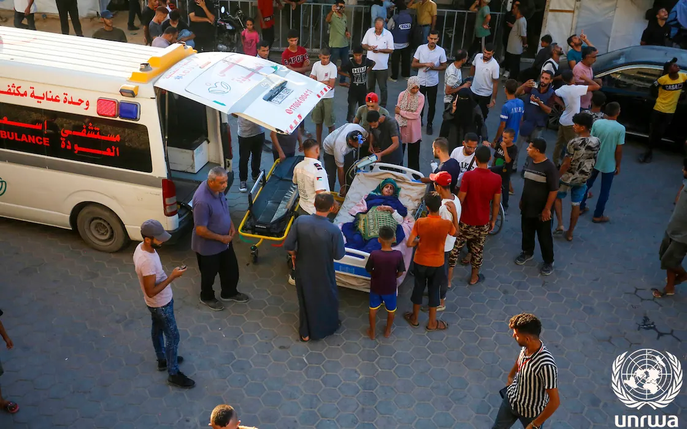

Qalqilya protests plan to close UNRWA hospital
Protesters want UNRWA to keep its Qalqilya hospital, open since 1951 and serving more than 17,000 refugee families, and reopen two wards.
HomeTopic
3 stories on health, newest first.

The Red Crescent's Bashar Murad says about 70,000 tents were flooded and respiratory infections and meningitis cases are increasing.
Protesters want UNRWA to keep its Qalqilya hospital, open since 1951 and serving more than 17,000 refugee families, and reopen two wards.
Greece signed a €600,000 grant for East Jerusalem hospitals on 2 November; WHO says 76% of patient permit requests were approved this year.